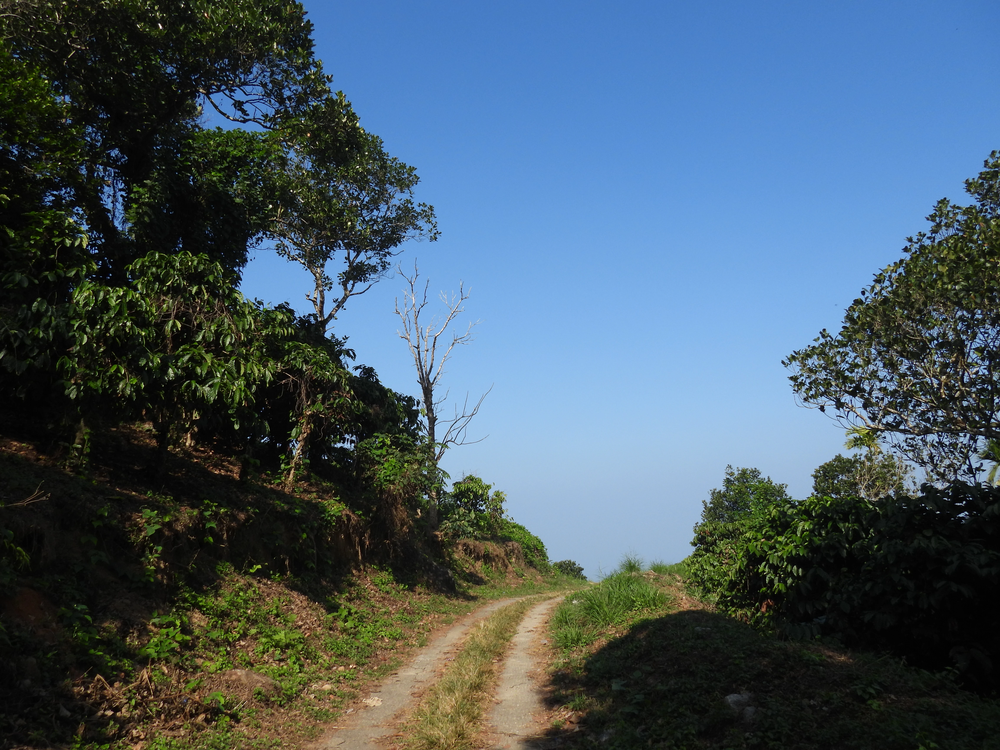
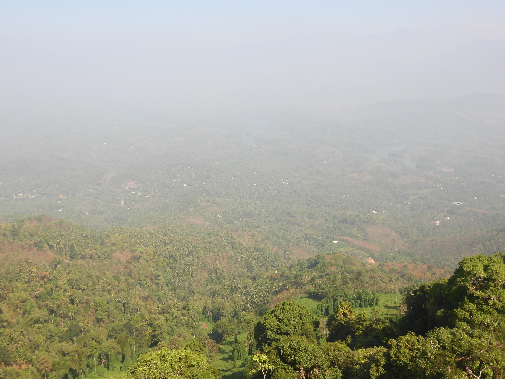
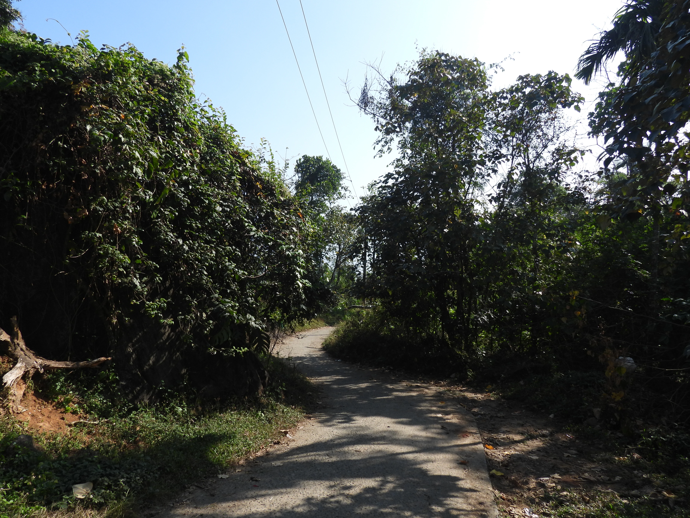
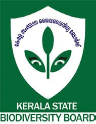
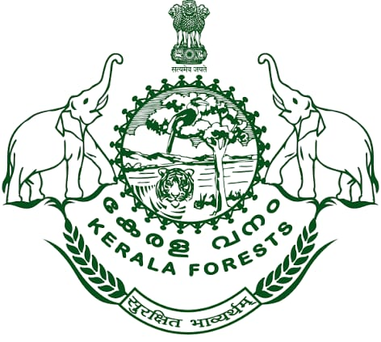
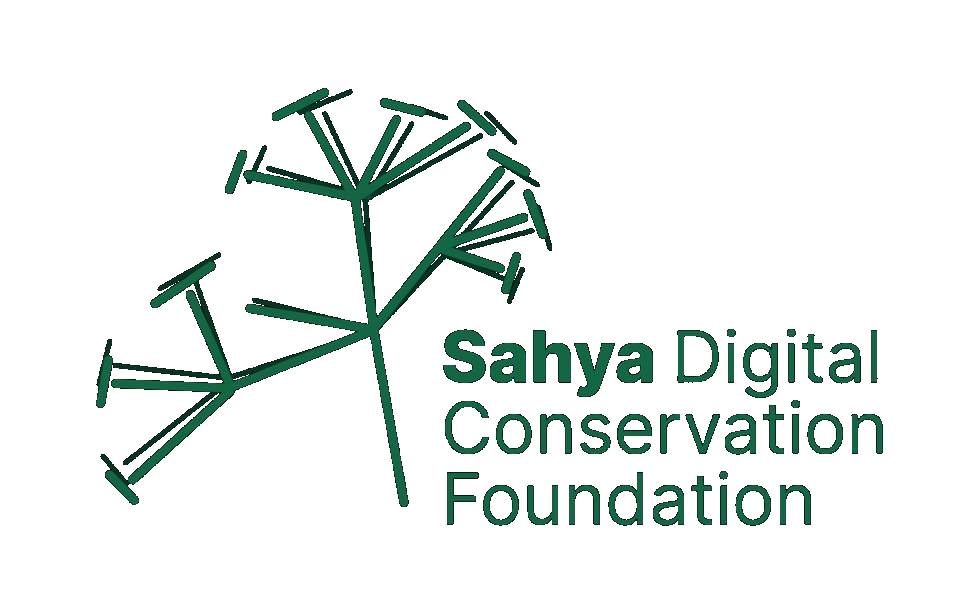
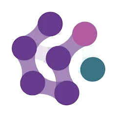
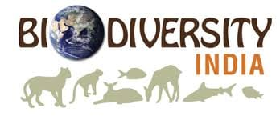
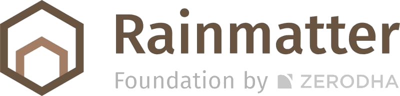

Vayalada Bioblitzവയലടയിലെ ജൈവവൈവിധ്യം
A community biodiversity survey on the misty hilltop of Vayalada — scientists, students and residents recording every plant, bird, moth and creature they can find, together. In support of participatory science and sustainable tourism for the Western Ghats.
Vayalada, the "Gavi of Malabar"
A hilltop within Panangad Grama Panchayat, Kozhikode district — misty, green, and quietly spectacular, tucked against the edge of the Malabar Wildlife Sanctuary in the Western Ghats.
Known locally as the Gavi of Malabar, the Vayalada–Kottakunnu hill sits about 2,200 ft above sea level, reached by a 44 km road north from Kozhikode city via Balussery (also 30 km from Koyilandy and 32 km from Thamarassery). A trek of just over a kilometre climbs through forest and open slope to the top, where mist rolls in through the monsoon and panoramic views open up in every direction.
What makes the hill unusually significant is water: streams flowing off Kottakunnu's three sides feed the district's three major rivers — north to the Kuttyadi river, east to the Poonoor river, and south-west to the Akalapuzha via the Manjapuzha (Raman river). Few points in the district sit at the meeting line of that many watersheds.
Panangad Panchayat itself spans 47 sq. km of hills, valleys and paddy land, bordered by evergreen forest and lying within a UNESCO-recognised World Biodiversity Heritage region. It's this setting — forest meeting farmland, wildlife sanctuary meeting village, three watersheds meeting on one hilltop — that makes Vayalada worth documenting closely, not just visiting.

Mount Vayalada Viewpoint
Four-direction views from the summit: Kakkayam and the Wayanad hills to the east (mist-capped at dawn, green by noon), the blue waters of Peruvannamuzhi reservoir to the north, the Arabian Sea over a sea of clouds to the west, and misty green peaks rising to the south.

Mullanpara
A rock outcrop with spiky, limestone-like ridges rising toward the sky — never slippery even in rain, and safe for visitors of any age. Vayalada's most popular photo point, with an elevated view over the reservoir below.

Kottakunnu Viewpoint
Overlooks Koorachundu and Perambra towns spread across the valley floor.
These hills were once contested for centuries between the Kottayam and Kurumbranad chieftains, prized as the source of wild pepper. Forest produce rights, though, belonged to the Paniya and Karimbala Adivasi communities who lived and worked the land. The name "Panangad" — forest of talipot palm — is said to trace to Francis Buchanan, the first surveyor of Malabar, who noted it while crossing the Poonoor river in the early 1800s. A 1930 cadastral map still marks the northern Kanthalad area simply as "Forest."
What is the Vayalada Bioblitz?
A bioblitz is a race against the clock, run together: for a fixed window, researchers and residents fan out across a landscape and record every species they can find. Vayalada's edition runs for 48 hours, timed just before Onam — when flowering plants, reptiles and other wildlife are at their most active.
Documentation & Technical
About 50 academic experts, naturalists and software specialists compile field observations into a structured, mapped biodiversity record using modern data tools.
Field & Habitat
Identifies biodiversity hotspots around Vayalada and schedules observation windows for birds, nocturnal species and other wildlife at the times they're most active.
Community & Outreach
Teachers, students and citizen scientists with an interest in plants, birds, reptiles and mammals join the survey, learning field science hands-on.
Programme
A rapid biodiversity assessment run over two full days at Vayalada, Panangad — from registration to closing presentation.
Experience Vayalada
Discover the breathtaking landscapes, biodiversity and unique experiences awaiting you at the Vayalada Bioblitz. Watch this short film to explore the destination before your visit.
Unable to load the video.
Watch on YouTube →Explore & experience Vayalada
Beyond the survey itself, Vayalada rewards a slower visit — best of all during the monsoon, when mist settles over the ridge and the whole hillside seems to breathe.

The summit trek
A moderate, roughly 1 km climb through forest and open slope — steep in stretches, but manageable for most walkers with sturdy footwear.

Monsoon mist
Vayalada's signature moment: rolling cloud and mist through the rains, with a cool breeze that gives the hill its "Gavi of Malabar" reputation.

Guided field walks
During the bioblitz, small groups move with naturalists and subject experts to spot and log species along marked routes.
Night walks
After dark, dedicated teams look for nocturnal and elusive species — moths, frogs and creatures rarely seen in daylight.
Vayalada Ultra Trail Run
One of only two ITRA-certified trail runs in Kerala. The 5th annual edition — 30 km and 60 km routes through hill forest paths from Balussery to Vayalada — runs on 15 November 2026, drawing 300+ runners from India and abroad each year.
How to reach
-
By road44 km north from Kozhikode city via Balussery. Also reachable from Koyilandy (30 km) and Thamarassery (32 km).
-
Nearest railway stationKozhikode, roughly 44 km away.
-
Nearest airportsCalicut International (Karipur), about 60 km; Kannur International, about 95 km.
K.S.R.T.C. Bus Time Schedule
Thamarassery – Balussery – Vayalada – Kozhikode
Bus timings for participants attending Vayalada BioBlitz 2026.
Morning Service
| Route | Time |
|---|---|
| Departure from Thamarassery | 07:00 AM |
| Arrival at Balussery | 07:30 AM |
| Arrival at Vayalada | 08:20 AM |
| Departure from Vayalada to Kozhikode | 08:30 AM |
Afternoon / Evening Service
| Route | Time |
|---|---|
| Departure from Kozhikode | 03:40 PM |
| Arrival at Balussery | 04:40 PM |
| Arrival at Vayalada | 05:25 PM |
| Departure from Vayalada to Thamarassery | 05:30 PM |
Note: Participants are requested to verify the timings with the nearest K.S.R.T.C. depot before travel, as schedules may be revised due to operational requirements.
Facilities
-
Camp stayBasic camp accommodation at Vayalada L.P. School, plus homestay with native village families for some participants. Meals arranged for the duration of the 48-hour survey.
-
Guided groupsField walks led by naturalists and subject experts across all three working divisions.
-
Marked trails & viewpointsThe summit trek and all three viewpoints are part of the survey route.
-
Registration deskOn-site check-in for participants, with local coordination support throughout the event.
Facility details for general (non-participant) visitors should be confirmed with the Panchayat closer to the date.
Vayalada is a hill-range village with limited facilities, so participants should come prepared:
- Water bottle
- Lunch box
- Bed sheet / sleeping bag
- Personal toiletries (toothbrush, toothpaste, soap, towel, etc.)
- Torch, comfortable trekking footwear and weather-appropriate clothing
Three ways in
Toggle a route to trace it on the map, or tap Directions to open it in Google Maps.
Routes
Distances are calculated live from the mapped route, so they may differ slightly from the road-distance figures above.
Organizing committee
Coordinated locally by the Panangad Grama Panchayat, with a welcoming committee drawn from the panchayat and Vayalada community.
V.M. Kamalakshi
Committee Chair & Panchayat President
Panangad Grama PanchayatJaisen Nedumpala
General Convenor & Secretary
Panangad Grama PanchayatManoj Karingamadathil
Science & Tech Coordination
Sahya Digital Conservation FoundationP.P. Gauri
Welcoming Committee
Panangad Grama PanchayatDileep Kumar
Welcoming Committee
Panangad Grama PanchayatC.K. Sathi Kumar
Welcoming Committee
Panangad Grama PanchayatK.K. Aravindakshan
Welcoming Committee
Vayalada CommunitySakeer Hussain
Welcoming Committee
Panangad Grama PanchayatRamla Hameed
Welcoming Committee
Panangad Grama PanchayatOrganising, Facilitating, Technical & Supporting Institutions
A collaborative conservation framework bringing together local government, scientific boards, knowledge platforms, and civil society partners.
Panangad Grama Panchayat
Biodiversity Management Committee (BMC)
Panangad Grama Panchayat
Kerala State Biodiversity Board
Malabar Natural History Society

Kerala Forests & Wildlife Department
Kerala Biodiversity Monitoring Network

Sahya Digital Conservation Foundation
GeoMinds.in
Remote Sensing, GIS & CartographyiNaturalist
eBird

Epicollect
five.epicollect.net
India Biodiversity Portal (IBP)

Ecological Restoration Alliance
ERA IndiaDistrict Tourism Promotion Council (DTPC)
KozhikodeSamagatha Foundation

Vayalada Resort
+91 88913 51530
RA Horizon Home Stay
+91 90483 13886
Auric Hills Resort
+91 75107 77730
LA CASCADA
lacascadaresort.com0496 208 1100

Vayalada Valley View Resort
vayaladavalleyviewresort.com+91 95622 15599

Mount Stratus Resort
mountstratusresort.com+91 90377 44644

Vayalada View Point Resort
+91 81130 02211
Rainmatter Foundation
Community Partners
Communities, institutions and conservation groups joining hands to make the Vayalada Bioblitz possible.
Walking Ferns

Walk With VC
Community
Kole Birders Collective

Kozhikode Birders

Department of Forestry
Sir Syed College
College of Forestry
Wetland Learning Center

iNaturalist Kerala
Community
Wikimedia Biodiversity Taskforce
Mistrica
Moving School Wayanad
Kerala Sasthra Sahithya Parishad

Department of Botany
University of CalicutHiran Venugopalan
(Logo Design)
www.hiran.in
Register & get in touch
Whether you're a student, naturalist, researcher, or just curious about Vayalada's wildlife, there's a place for you in the survey.
Contact
For registration, volunteering, or general queries about the Vayalada Bioblitz.